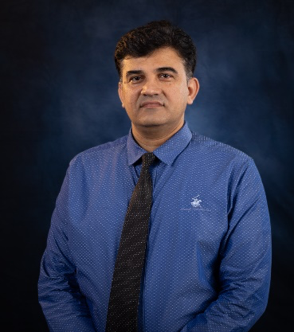

Associate Professor of Data and Cybersecurity, College of Computing & Information Technology, University of Doha for Science & Technology (UDST), Qatar.
18+ years building and securing systems across blockchain, IoT, and cyber-physical infrastructure — and training the researchers who'll keep doing it after me.

Mueen Uddin is an Associate Professor of Data and Cybersecurity at the University of Doha for Science and Technology (UDST), Qatar, working at the intersection of blockchain, applied cryptography, and the security of AI, IoT, and cyber-physical systems. Over an 18-year academic career spanning Qatar, Malaysia, Saudi Arabia, Brunei, Oman, and Pakistan, his research has produced 200+ peer-reviewed publications and more than 9,000 citations with an h-index of 51, and earned him four consecutive years on Stanford and Elsevier's list of the world's top 2% of scientists (2022–2025). In addition, he is included in the Research.com Ranking of Computer Science Scientists in Qatar.
He currently serves as Principal or Co-Principal Investigator on research grants spanning IoT-secured food systems, national pathogen-surveillance infrastructure, and post-quantum protection for critical infrastructure. He sits on the editorial boards of various renowned journals. His current doctoral supervision centers on blockchain-based IoT device authentication and quantum-resistant protection of patient data.
His research expertise centers on the security of large-scale distributed systems, encompassing Cloud, Edge, IoT, and Cyber-Physical Systems, as well as emerging technologies such as Blockchain, NFTs, the Metaverse, Web3, Post-Quantum Cryptography, and Generative and Agentic AI Security.
A cross-section spanning current work through the doctoral research that opened this line of inquiry. The full record — including 180+ Scopus-indexed papers with a combined Impact Factor above 400 — is on Google Scholar and in the CV.
SEIMR: Secure Ethical IoT Mixed Reality Integration Framework for Metaverse Experiences
IEEE Transactions on Consumer Electronics
Generative AI Revolution in Cyber Security: A Comprehensive Review of Threat Intelligence and Operations
Artificial Intelligence Review
Hierarchical Privacy-Preserving Security Framework for Real-Time Protection in SAGIN-Enabled Industrial IoT Systems
Neural Networks
A Critical Analysis of Generative AI: Challenges, Opportunities, and Future Research Directions
Archives of Mathematical Modelling in Engineering
TwinSoft: Risk-Bounded Digital-Twin Control with Semantic Telemetry and SDN/NFV Enforcement for Low-Latency Autonomous Vehicular Communication Networks
Vehicular Communications
Coherence-Driven Edge Intelligence for Trustworthy Vehicular Low Altitude Internet of Things Networks
IEEE Internet of Things Journal
Exploring the Convergence of Metaverse, Blockchain, and AI: A Comprehensive Survey of Enabling Technologies, Applications, Challenges, and Future Directions
WIREs Data Mining and Knowledge Discovery
QED-Net: Quantum Emotional Dynamics Synthesis Network for Sentiment Analysis in Medical IoT
IEEE Transactions on Computational Social Science
PrivNet — Generative AI-Augmented Quantum Privacy Framework for Vehicular Networks
IEEE Transactions on Intelligent Transportation Systems
Hybrid Attribute-Based Access Control Framework for Intelligent Computing in Consumer IIoT
IEEE Transactions on Consumer Electronics
AMEF: Adaptive Multimodal Engagement Framework for Metaverse with 6G-enabled IoT
Cluster Computing
TUB-IoT: Quantum Trust-Based Big Data UAV Architecture for Security-Centric Internet of Things
IEEE Open Journal of Communication Society
DQ-VeDT: A Decentralised Quorum-based Authentication for Quantum-Safe Vehicular Digital Twins
IEEE Open Journal of Vehicular Technology
LLM-Driven Multi-Agent Framework for Autonomous Network Slice Management: Architecture and Proof of Concept Experiments
IEEE Open Journal of Communication Society
Extending ERC721: Design and Implementation of a Novel Secure NFT Framework for IoT Asset Authentication in Cyber-Physical Systems
Blockchain Research and Applications
DASHES — Autonomous and Secure Framework for Explainable Connected Healthcare with Consumer Electronics
IEEE Transactions on Consumer Electronics
From Hype to Reality: Unveiling the Promises, Challenges and Opportunities of Blockchain in Supply Chain Systems
Sustainability
Blockchain for Digital Twins: Recent Advances and Future Research Challenges
IEEE Network
Blockchain Medledger: Hyperledger Fabric-Enabled Drug Traceability System for Counterfeit Drugs in Pharmaceutical Industry
International Journal of Pharmaceutics
Handwritten Optical Character Recognition (OCR): A Systematic Literature Review
IEEE Access
12 research grants held as PI or Co-PI across Qatar, Saudi Arabia, Brunei, and Malaysia, spanning IoT security, blockchain infrastructure, and post-quantum cryptography.
Next-Generation Protein-Rich Azolla Systems: IoT-Controlled Cultivation, AI Yield Prediction & Blockchain-Enabled Sustainability for Qatar Food Security
QRDI Qatar (FSC06-0203-260018) · submitted 2026
SHIELD-Q: AI-Powered Pathogen Surveillance and National Disease Database for Smart Greenhouse Management in Qatar
QRDI Qatar (FSC06-0317-260116) · submitted 2026
Securing Decentralized Fintech with Blockchain-Based User Authentication
Hail University, KSA (RG-24 149) · 2025
AI-Enabled Indoor Fire Detection and Alerting System for Blind and Visually Impaired Users
King Salman Center for Disability Research, KSA · submitted 2026
Q-POPs: Systematic Monitoring of Qatar's Persistent Organic Pollutants for Stockholm Convention & QNV-2030 Compliance
QRDI Qatar (CCEC02-0217-250069) · submitted 2025
Predicting Students' Performance Using an Artificial Neural Network-Based Intelligent Model
Universiti Brunei Darussalam · 2021–2022
Next-Generation Blockchain-Enabled Virtualized Cloud Security Solutions: Review and Open Challenges
Universiti Brunei Darussalam · 2021
On the Design of Lightweight Authentication, Signcryption, and Privacy Preservation Solutions for the IoT
FIC Research Grant, Universiti Brunei Darussalam · 2021–2022
Big Data Analytic Model for Irregular Traffic Detection in High-Speed Networks
Universiti Kebangsaan Malaysia · 2022
Hadoop-Based Big Data Security Infrastructure Against DDoS-Based Dyn and MQTT Attacks in Cloud Environments
Effat University, Jeddah · 2018–2019
Multipath Routing Protocol for Mobile Ad-hoc Networks
Effat University, Jeddah · 2016–2017
Robust Security Infrastructure Against IoT Device-Based DDoS Attack in Cloud Environments
Effat University, Jeddah · 2018–2019
35+ awards, fellowships, and certificates across an 18-year career. The highlights:
21 editorial and guest-editor roles, plus 32 conference / technical-program-committee positions since 2013.
Faculty-evaluation scores above 90% for eight consecutive years, across four countries.
Also developed and taught pathways toward CompTIA A+, CISSP, and CISA certification. Representative courses:
College of Computing & Information Technology
University of Doha for Science & Technology, Doha, Qatar